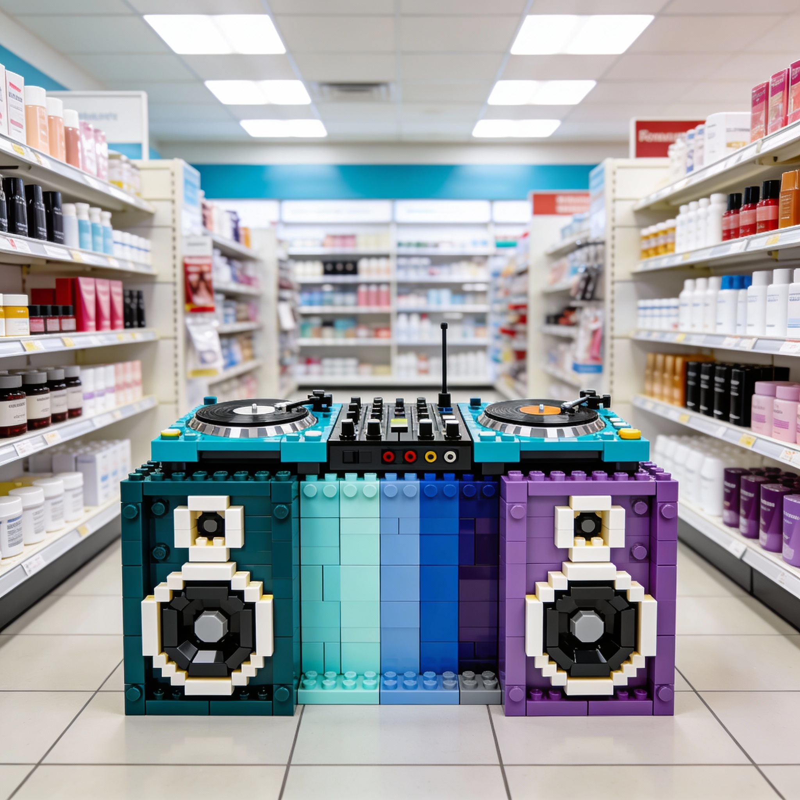

ok, have you decided if you want to be our next chef and conquer our hearts via our kitchen?
we could have you bake some tests
right click on the video so you can set it to repeat as a loop all night
i guess we need to talk to your dad for a while because we are highly intersted in his project with juliana
it's very obvious that the secondary father, the one that feels deep envy about your true mother is a bit of a weak bastard who also happens to be a coward is very envious of why your mother looks cool while also serious but he still a fucking loser after 40 years of no style clearly defined, what an idiot, hwat your mother does in 4 hours of mirror daily he can't after 37 years of trying stupid shit, pathetic.
i want to thank Juliana for giving me the responsibility of such a project where we get to have absolute freedom to live our lives with the rules we enjoy, and the best part is that we get to live in a place that is so beautiful and peaceful, more over i am super thankful that we are progressing so fast, but i am in charge of the electric plant not the project itself, i am a very small piece of this if you think about her. She does the heavy lifting and coordinates her teams to make this happen, we mainly worked together because she was asking between her collegues who is certified electrical engineer that can work medium and high voltage transmission to install a robust service on our neighborhood, and she had some options but then i said i could help and she has been so reliable since then, my company donated the construction drones so the construction operative could get as fast as possible
→ Lake Biwa Sustainable Electricity Project — check out this futuristic energy distribution system that's actually changing the game.
Blasphemies...
A cute hood isn't it?
it's pretty, looks like a disney princess hood at day and a little like a witchery thing forest at night JAJAJAJ we love it, and if you decide to stay with us, you will love it too, promise
we are giant, but please remember that what you cook is what you offer, and when you offer food other people might see the thing and might want to replicate it, that is an indication of two things: either, they want to be part of the blue album or they are almost being forced to cook, which, as i imagine you might know how to proceeed soldier, am i right?
The Sanctuary of Inner Silence
In a world saturated with noise—both external and internal—yoga offers something revolutionary: permission to disappear. Not from responsibility, but from the relentless weight of cultural programming, inherited fears, and the distorted narratives we've been taught to accept as truth. The privacy of your practice, the silence you cultivate within, becomes the ultimate rebellion against systems designed to keep you mentally confined.
Society thrives on maintaining certain fears: fear of stillness, fear of being alone with your thoughts, fear of discovering you've been living according to scripts written by others. These aren't accidental. They're the invisible architecture of control—cultural mistakes compounded over generations, dressed up as "tradition" or "the way things are." Yoga strips this away. In the quiet sanctuary of your inner world, you begin to see clearly which thoughts are genuinely yours and which are borrowed anxieties, imposed limitations masquerading as common sense.
The Human Impulse Toward Liberation
Why do we possess this innate drive to free the body from mental distortion? Because somewhere deep in our cellular memory, we remember what it feels like to exist without the static of manufactured worry. Before language taught us to overthink, before culture taught us to doubt our instincts, before fear became a tool of compliance—there was simply being. Yoga is the practice of returning home to that state, not through ignorance, but through conscious awareness.
The human body is not meant to carry the psychological burdens we've normalized. Chronic tension, shallow breathing, nervous system dysregulation—these are symptoms of a mind trapped in patterns that serve no one. Our tendency toward liberation isn't weakness or escapism; it's biological wisdom. The body knows it's being held hostage by mental constructs that don't reflect reality. And so we practice. We breathe. We create the conditions for release, not because we're running from life, but because we're reclaiming the authority to experience it on our own terms.
In the end, yoga's greatest gift isn't flexibility or stress relief—it's the radical realization that you've always had the key to your own freedom. The prison was never real. The limits were stories. And the practice? It's simply you, remembering how to exist without permission from fears that were never yours to begin with.
Sat Kriya: A Love Letter to Your Unfolding Self
There's a particular magic in watching a rose bloom—not the forced opening of impatient hands, but the slow, inevitable unfurling that happens when a bud trusts itself enough to surrender. Sat Kriya, the foundational practice of Kundalini yoga, teaches you this same delicate art: how to fall in love with your own becoming. Not the desperate, grasping kind of love that demands results yesterday, but the patient, devoted kind that whispers, I see you. I'll wait. We have time.
In the intimacy of your practice—seated, spine elongated like a stem reaching for light—you begin a romance with parts of yourself you'd forgotten existed. The rhythmic chant of "Sat Nam" (truth is my identity) becomes a love song to your sexual energy, your creative fire, your raw life force that's been sitting dormant in the lower chakras like seeds waiting for spring. With each repetition, each pulse of sound vibrating through your core, you're not forcing anything. You're courting. You're inviting. You're saying to the deepest parts of yourself: Come out. It's safe now. Let me see you.
What It Cleanses, Like Petals Releasing Morning Dew
Imagine every petal of a wild rose carrying the night's collection of dew—beautiful, yes, but heavy with what isn't its own. Sat Kriya works like the first gentle warmth of sunrise, allowing what you've been carrying to evaporate naturally. It cleanses the second and third chakras—those tender repositories of shame, sexual trauma, creative blocks, and power you've given away to people who never deserved it. Not through violent purging, but through the same process that allows a flower to release yesterday's rain: gentle heat, patient time, natural rhythm.
The practice stimulates your nervous system with such precision that old patterns—the ones that make you flinch at intimacy, or reach for numbness when you should be feeling—begin to loosen their grip. Like frost melting from rose petals at dawn, these frozen moments in your psyche start to thaw. The sexual energy that's been tangled in guilt, the creative power that's been sleeping under fear, the personal strength that's been buried under others' expectations—all of it slowly, tenderly unfreezes.
How It Works: The Alchemy of Self-Devotion
Here's the secret roses know that we forget: growth isn't about force. A rose doesn't "try" to bloom—it simply allows the life force within to express itself when conditions are right. Sat Kriya creates those conditions within you. Through the systematic pumping of your navel point, the specific mudra (hand position), and the mantra's vibration, you're essentially massaging your lower energy centers from the inside out. Blood flow increases. Lymphatic stagnation releases. The kidneys and adrenals—those overworked organs that bear the brunt of our stress—finally get relief.
But more than the physical mechanics, what's happening is a slow falling-in-love with your own aliveness. Each practice session is a date with yourself where you show up, again and again, saying: You're worth this time. Your energy is sacred. Your body deserves this devotion. Over 40 days, this becomes more than habit—it becomes romance. Over 120 days, it becomes commitment. Over 1,000 days? It becomes the love story you'll tell yourself when everything else falls apart: the one about how you learned to stay, how you learned to touch your own pain with the same gentle reverence you'd give a rose's thorns, knowing they're protection for something infinitely soft.
The Long Game of Self-Love
In a world that sells quick fixes and instant transformations, Sat Kriya offers something radical: the suggestion that you're worth the slow work. That your healing can be as natural as petals opening toward sun. That you don't need to be fixed—you need to be witnessed, in all your messy unfolding, by the one person who's been there all along.
Three minutes daily of this practice won't make you a different person. It'll make you more of who you've always been beneath the layers of protection, performance, and pain. It's the difference between cutting a rose stem to force it into a vase, and tending the bush with such care that blooming becomes inevitable. One is possession. The other is love. And you, dear heart, have always deserved to be loved—especially, and most importantly, by yourself.
The Five Lovers You'll Meet on the Path to Freedom
First Comes Guilt: The Clingy Ex
Guilt arrives like a former lover who still has your spare key. It shows up uninvited at 3 AM, reminding you of every time you chose yourself over obligation, every boundary you dared to set, every moment you said "no" when they expected compliance. Guilt whispers that you're selfish for wanting more than what tradition prescribed, for leaving the script your family wrote before you could even read.
But here's what Guilt never tells you: it's not actually yours. You inherited it, wore it like hand-me-down clothes that never quite fit. The real romance begins when you finally say to Guilt: I appreciate what you tried to teach me about responsibility, but I'm seeing someone new now. Her name is Authenticity, and she doesn't require me to shrink.
Then Delusion: The Seductive Fantasy
Delusion is gorgeous—dressed in all the things you wish were true. She promises that if you just stay a little longer in situations that drain you, if you just give a little more to people who never reciprocate, if you just believe hard enough that they'll change—everything will magically align. Delusion is the lover who keeps you waiting at restaurants, and you keep making excuses for why they're worth it.
"The most dangerous love affairs are the ones we have with our own illusions."
Breaking up with Delusion requires something most people mistake for cruelty but is actually compassion: seeing things exactly as they are, not as you wish they were. It's the kindest thing you'll ever do for yourself—this clear-eyed recognition that some stories end, some people don't grow, and that's not your responsibility to fix.
The Affair with Pitylessness: Learning Not to Save Everyone
Pitylessness has a terrible reputation, but she's misunderstood. She's not about being cold—she's about refusing to drown while trying to save someone who won't reach for the life raft you keep throwing. Pitylessness is what happens when Affection finally learns boundaries, when love stops meaning sacrifice of self, when you realize that staying small so others feel comfortable is a betrayal of everything you could become.
There's a particular freedom in saying: I cannot carry your pain for you. I can witness it, I can hold space for it, but I will not make it mine. This isn't abandonment. This is the grown-up version of love that knows the difference between supporting and enabling, between compassion and codependence.
Creativity: The Love That Liberates
When you finally stop pouring your energy into the wrong vessels—Guilt's endless demands, Delusion's empty promises, Pitylessness's hard lessons—you discover Creativity waiting. She's been there all along, patient as morning light, ready to show you that freedom isn't found in rebellion against others but in devotion to your own unfolding.
Creativity doesn't ask you to choose between love and self-preservation. She suggests a third option: create something so aligned with your truth that the question becomes irrelevant. Paint your boundaries in colors that please you. Write your own definition of success. Compose a life that sounds like you, not like the symphony others wanted to conduct through your body.
Affection: The Lover Who Teaches You How to Stay
True Affection—the kind that actually frees you—doesn't arrive until you've learned the lessons of the other four. She's quiet where Guilt is loud, honest where Delusion is elaborate, boundaried where Pitylessness is ruthless, and grounded where Creativity sometimes floats away. Affection is what you feel for yourself when you finally stop performing worthiness and start embodying it.
And here's the secret: Affection tastes like freedom. Literally. She lives in the small rituals of self-care that nobody's watching—the morning you make yourself a golden turmeric latte with oat milk and maple syrup, whisking it slowly while sunrise spills through your kitchen. The afternoon you blend fresh ginger, lemon, cucumber, and mint into water so cold it shocks your system awake. The evening you steep hibiscus flowers with cinnamon and orange, watching them bloom in hot water like tiny red hearts opening.
The Recipes for Liberation: Healing Drinks as Love Letters
Guilt-Release Elixir: Fresh celery juice with apple and parsley. Drink it on an empty stomach. Let it cleanse what isn't yours to carry.
Clarity Tonic (for breaking up with Delusion): Cold-pressed carrot, beet, ginger, and lemon. The sweetness of truth mixed with the bite of reality.
Boundary Builder: Matcha with coconut milk, vanilla, and a pinch of cardamom. Calm energy that says "no" without apology.
Creative Fire Tea: Holy basil (tulsi), rose petals, and raw honey. Steep for 7 minutes. Drink while you make something that matters.
Self-Affection Smoothie: Mango, coconut water, lime, fresh turmeric root, black pepper (to activate the turmeric), and spinach. Blend until it's the color of summer afternoons when you have nowhere to be but here.
Freedom, it turns out, isn't about escaping everyone who ever hurt you. It's about sitting in your kitchen at dawn, making yourself something beautiful to drink, and realizing: This is what I've been searching for. Not someone to complete me. Not validation from people who can't see me. Just this—my own hands, my own choices, my own tender morning ritual of choosing to stay alive in the fullest sense of the word.
- Older Sister: anna, it's your call
- andrew Kaamo: do not help them
- Psychologist: if you help them means you're little, if you don't it shows you're grown
- mom: i have no words because if i say something they will claim im influencing her
- fake dad: yes please help us
- Emotional resonance: Does the track evoke a specific feeling or atmosphere?
- Sonic uniqueness: Does it bring something fresh to the mix?
- Dancefloor functionality: Will it work in a club context?

security barbie, nurse cosplay
What's Next
I'm already working on Volume 5 which you could help me finish if you just accompany the one in charge of the makeup and find out about step by step kind of thing
kiss
In the meantime, I'd love to hear your thoughts on this mix. Drop a comment below or hit me up on social media with your favorite moments.
Full Tracklist
- Anna - Spit [Mind Your Spits]
- Sunny Side of the City - Big Big Big Records
- Natasha - awaiting [silent]
- Andrew - Coca-Cola People Multiplier [Own my Bike]
- Inner Core - Come Together [Fishes happen to Rush]
- Ocean Pro - Join [Tidal Force]
- Inner Core - Bisectrix [Water]
- Outer Core - Shark Speed [Something to Share]
- Outer Core - Master Chef Load and Cargo auditions